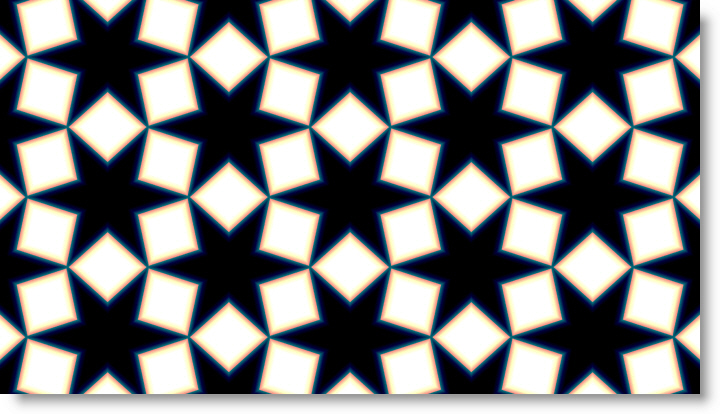

S_TextureTiles
Description
TextureTiles draws a repeating pattern of tiles. The shapes can be hexagons, triangles, diamonds, stars, or variations on those, depending on the Morph parameters.
The S_TextureTiles filter comes from the Emmy award winning Boris FX Sapphire filter set.
Category
Render.
Controls
Presets
To select a preset, pick one from the Presets window.
Size
The size of each tile within its cell.
Frequency
The spatial frequency of the tile pattern. Increase for many smaller tiles or decrease for fewer large tiles.
Angle
Rotates the pattern around the center point.
Rel Width
Squashes or stretches the pattern.
Rel Wid Pre Rot
Squashes or stretches the pattern before rotating using Angle.
Shift X & Y
Shifts the pattern and also sets the center point for rotation, Morph Radial, and Size Radial.
Morph
Morph Shapes
Changes the shapes of the tiles smoothly between hexagons, triangles, diamonds and stars.
Morph Grad Add
Change the shape morphing across the image so the left side has one shape and the right side another.
Morph Grad Angle
Angle of the morph gradient. If Morph Grad Add is zero, this has no effect.
Morph Radial
Morph the shapes radially away from the center point. The shapes will be hexagons in the center smoothly becoming different toward the edges of the image.
Size Grad Add
Change the shape size differently across the image.
Size Grad Angle
Angle of the size gradient. If Size Grad Add is zero, this has no effect.
Size Radial
Change the shape size according to the distance from the center point. Increase to make shapes smaller at the screen edge.
Edge Softness
Softens the edges of each tile. If Softness Red/Green/Blue are not one, color fringing is produced around the edges of the tiles.
Edge Softness RGB
Softness Red
Relative softness of the red channel To remove color fringing around tile edges, set Softness Red/Green/Blue to one.
Softness Green
Relative softness of the green channel To remove color fringing around tile edges, set Softness Red/Green/Blue to one.
Softness Blue
Relative softness of the blue channel To remove color fringing around tile edges, set Softness Red/Green/Blue to one.
Invert
Invert the pattern, swapping dark and bright areas.
Brightness1
Scales the brightness of Color1. Increase for more contrast.
Color1
The color of the brighter parts of the pattern. The colors of the result are determined by an interpolation between Color0 and Color1.
Color0
The color of the darker parts of the pattern.
Offset0
Adds this value to Color0. Decrease to a negative value for more contrast.
Bg Brightness
Scales the brightness of the image.
Combine
Determines how the pattern is combined with the source image.
Texture Only
Renders only the pattern with no Background.
Mult
The pattern is multiplied by the Background.
Add
The pattern is added to the Background.
Screen
The pattern is blended with the Background using a screen operation.
Difference
The result is the difference between the pattern and Background.
Overlay
The pattern is combined with the Background using an overlay function.
Show Frequency
Enables/disables the on-screen control for adjusting the Frequency parameter.
Show Shift
Enables/disables the on-screen control for adjusting the Shift parameter.